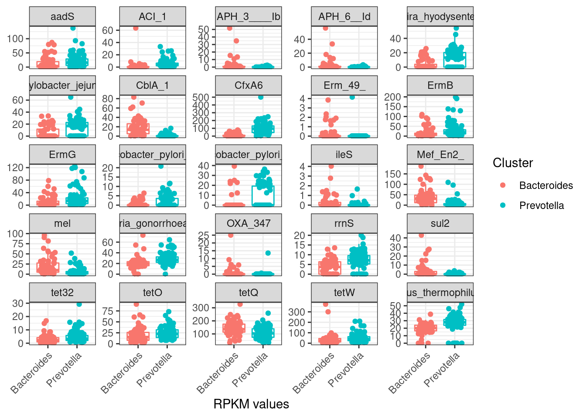
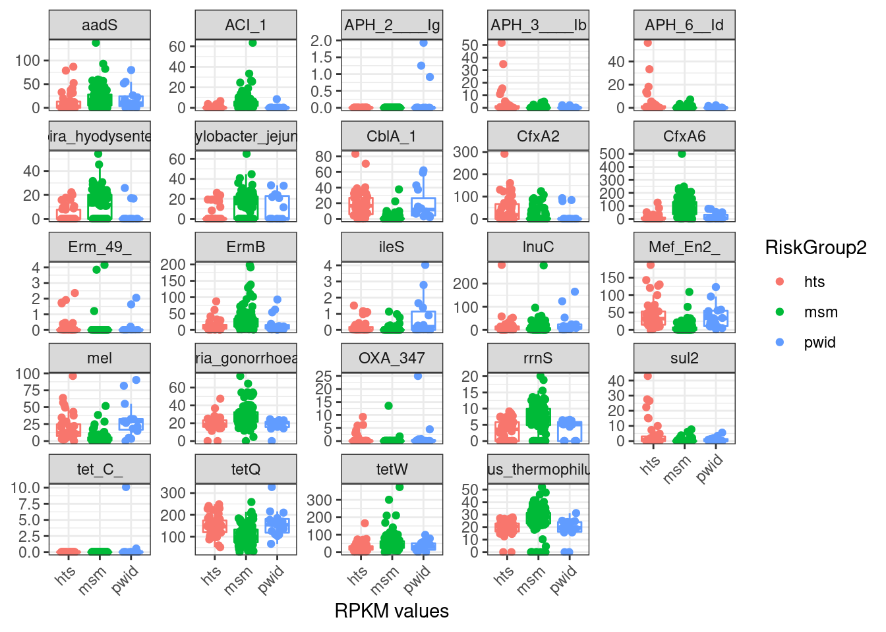

Last updated: 2022-09-20
Checks: 6 1
Knit directory: 2022_Rubio_MetaHIV/
This reproducible R Markdown analysis was created with workflowr (version 1.7.0). The Checks tab describes the reproducibility checks that were applied when the results were created. The Past versions tab lists the development history.
The R Markdown file has unstaged changes. To know which version of
the R Markdown file created these results, you’ll want to first commit
it to the Git repo. If you’re still working on the analysis, you can
ignore this warning. When you’re finished, you can run
wflow_publish to commit the R Markdown file and build the
HTML.
Great job! The global environment was empty. Objects defined in the global environment can affect the analysis in your R Markdown file in unknown ways. For reproduciblity it’s best to always run the code in an empty environment.
The command set.seed(20220202) was run prior to running
the code in the R Markdown file. Setting a seed ensures that any results
that rely on randomness, e.g. subsampling or permutations, are
reproducible.
Great job! Recording the operating system, R version, and package versions is critical for reproducibility.
Nice! There were no cached chunks for this analysis, so you can be confident that you successfully produced the results during this run.
Great job! Using relative paths to the files within your workflowr project makes it easier to run your code on other machines.
Great! You are using Git for version control. Tracking code development and connecting the code version to the results is critical for reproducibility.
The results in this page were generated with repository version 995bf04. See the Past versions tab to see a history of the changes made to the R Markdown and HTML files.
Note that you need to be careful to ensure that all relevant files for
the analysis have been committed to Git prior to generating the results
(you can use wflow_publish or
wflow_git_commit). workflowr only checks the R Markdown
file, but you know if there are other scripts or data files that it
depends on. Below is the status of the Git repository when the results
were generated:
Ignored files:
Ignored: .Rhistory
Ignored: .Rproj.user/
Ignored: output/aribaData/
Ignored: output/grootData/
Unstaged changes:
Modified: analysis/08_amr_significance.Rmd
Note that any generated files, e.g. HTML, png, CSS, etc., are not included in this status report because it is ok for generated content to have uncommitted changes.
These are the previous versions of the repository in which changes were
made to the R Markdown (analysis/08_amr_significance.Rmd)
and HTML (docs/08_amr_significance.html) files. If you’ve
configured a remote Git repository (see ?wflow_git_remote),
click on the hyperlinks in the table below to view the files as they
were in that past version.
| File | Version | Author | Date | Message |
|---|---|---|---|---|
| html | 75bb4b6 | Elisa | 2022-09-15 | 150922 |
| Rmd | 36b07ee | Elisa | 2022-09-12 | amr_significance |
| Rmd | 3d839a8 | Elisa | 2022-09-12 | profile update |
library(tidyverse)
library(kableExtra)
library(vegan)
library(ggpubr)
library(glue)
library(patchwork)
library(ggstatsplot)
library(broom)load("output/summarized_ariba.RDA")
load("output/rarefied_ariba.RDA")
load("output/ariba_dist.RDA")
metadata<-read_csv("data/Metadata/metadata.csv")sig_AMR_clin_dic<-function(data, metadata, refdata, clin_var){
##transpose data
ref_name<-pull(data, ref_name)
data<-as_tibble(cbind(SampleID = names(data), t(data)))%>%slice(-1)%>%
mutate_at(vars(-("SampleID")),as.numeric)
colnames(data)<-c("SampleID", ref_name)
##merge data with metadata and reference data
data_all<-data%>%
pivot_longer(-SampleID, names_to = "ref_name", values_to = "value")%>%
inner_join(., metadata, by="SampleID")%>%
inner_join(., refdata, by="ref_name")
sig_amr<-data_all%>%
nest(data=-ref_name)%>%
mutate(test=map(.x=data, ~wilcox.test(value~!!ensym(clin_var), data=.x)%>%tidy))%>%
unnest(test)%>%
mutate(p.adjust=p.adjust(p.value, method = "BH"))%>%
filter(p.adjust<0.05)%>%
select(ref_name, p.adjust)
data_all<-data_all%>%
inner_join(sig_amr, by="ref_name")
sig_amr<-sig_amr%>%
inner_join(refdata, by="ref_name")
res<-list(data_all, sig_amr)
names(res)<-c("data_plot", "sig_amr")
return(res)
}sig_AMR_clin_factor<-function(data, metadata, refdata, clin_var){
##transpose data
ref_name<-pull(data, ref_name)
data<-as_tibble(cbind(SampleID = names(data), t(data)))%>%slice(-1)%>%
mutate_at(vars(-("SampleID")),as.numeric)
colnames(data)<-c("SampleID", ref_name)
##merge data with metadata and reference data
data_all<-data%>%
pivot_longer(-SampleID, names_to = "ref_name", values_to = "value")%>%
inner_join(., metadata, by="SampleID")%>%
inner_join(., refdata, by="ref_name")
sig_amr<-data_all%>%
nest(data=-ref_name)%>%
mutate(test=map(.x=data, ~kruskal.test(value~!!ensym(clin_var), data=.x)%>%tidy))%>%
unnest(test)%>%
mutate(p.adjust=p.adjust(p.value, method = "BH"))%>%
filter(p.adjust<0.05)%>%
select(ref_name, p.adjust)
data_all<-data_all%>%
inner_join(sig_amr, by="ref_name")
sig_amr<-sig_amr%>%
inner_join(refdata, by="ref_name")
res<-list(data_all, sig_amr)
names(res)<-c("data_plot", "sig_amr")
return(res)
}amr_sig_cluster<-sig_AMR_clin_dic(ariba_rpkm, filter(metadata, !is.na(Cluster)), refname_all_ariba, Cluster)
amr_sig_cluster$sig_amr %>% kable(caption="**Significant AMR genes, microbiome cluster (Ariba RPKM**")%>%kable_paper("striped")%>%scroll_box(width = "100%", height = "500px")| ref_name | p.adjust | ARO Term | ARO Accession | NCBI | init_final | CVTERM ID | ARO Name | Protein Accession | DNA Accession | AMR Gene Family | Drug Class | Resistance Mechanism |
|---|---|---|---|---|---|---|---|---|---|---|---|---|
| CblA_1.3002999.GQ343019.132_1023.1188 | 0.0000000 | CblA_1 | 3002999 | GQ343019 | 132_1023 | 39433 | CblA-1 | ACT97415.1 | GQ343019 | CblA beta-lactamase | cephalosporin | antibiotic inactivation |
| CfxA6.3003097.GQ342996.797_1793.1744 | 0.0000000 | CfxA6 | 3003097 | GQ342996 | 797_1793 | 39650 | CfxA6 | ACT97371.1 | GQ342996 | CfxA beta-lactamase | cephamycin | antibiotic inactivation |
| ErmB.3000375.AF242872.1.2131_2878.5828 | 0.0000296 | ErmB | 3000375 | AF242872 . 1 | 2131_2878 | 36514 | ErmB | AAF86219.1 | AF242872.1 | Erm 23S ribosomal RNA methyltransferase | lincosamide antibiotic;macrolide antibiotic;streptogramin antibiotic | antibiotic target alteration |
| ErmG.3000522.L42817.201_936.590 | 0.0004373 | ErmG | 3000522 | L42817 | 201_936 | 36661 | ErmG | AAC37034.1 | L42817 | Erm 23S ribosomal RNA methyltransferase | lincosamide antibiotic;macrolide antibiotic;streptogramin antibiotic | antibiotic target alteration |
| Mef_En2_.3004659.AF251288.1.794_2000.5539 | 0.0000000 | Mef_En2_ | 3004659 | AF251288 . 1 | 794_2000 | 42698 | Mef(En2) | AAF74725.1 | AF251288.1 | major facilitator superfamily (MFS) antibiotic efflux pump | macrolide antibiotic | antibiotic efflux |
| Neisseria_gonorrhoeae_23S.3004836.NR_103957.0_2910.5918 | 0.0000001 | Neisseria_gonorrhoeae_23S | 3004836 | NR_103957 | 0_2910 | 42966 | Neisseria gonorrhoeae 23S rRNA with mutation conferring resistance to azithromycin | NA | NR_103957 | 23S rRNA with mutation conferring resistance to macrolide antibiotics | glycopeptide antibiotic;lincosamide antibiotic;macrolide antibiotic;phenicol antibiotic;pleuromutilin antibiotic;streptogramin antibiotic | antibiotic target alteration |
| Thermus_thermophilus_23s.3005083.AE017221.1.1534489_1537382.6116 | 0.0000000 | Thermus_thermophilus_23s | 3005083 | AE017221 . 1 | 1534489_1537382 | 43292 | Thermus thermophilus 23s rRNA conferring resistance to pleuromutilin antibiotics | NA | AE017221.1 | 23S rRNA with mutation conferring resistance to pleuromutilin antibiotics | glycopeptide antibiotic;lincosamide antibiotic;macrolide antibiotic;phenicol antibiotic;pleuromutilin antibiotic;streptogramin antibiotic | antibiotic target alteration |
| ileS.3003730.CP001840.1.1610636_1613960.5227 | 0.0046570 | ileS | 3003730 | CP001840 . 1 | 1610636_1613960 | 40419 | Bifidobacterium bifidum ileS conferring resistance to mupirocin | ADP36409.1 | CP001840.1 | antibiotic-resistant isoleucyl-tRNA synthetase (ileS) | mupirocin | antibiotic target alteration |
| mel.3000616.AF227521.1.3269_4487.5180 | 0.0000001 | mel | 3000616 | AF227521 . 1 | 3269_4487 | 36910 | mel | AAL73129.1 | AF227521.1 | ABC-F ATP-binding cassette ribosomal protection protein | lincosamide antibiotic;macrolide antibiotic;oxazolidinone antibiotic;phenicol antibiotic;pleuromutilin antibiotic;streptogramin antibiotic;tetracycline antibiotic | antibiotic target protection |
| rrnS.3003978.NC_005353.1.38549_40023.4108 | 0.0000148 | rrnS | 3003978 | NC_005353 . 1 | 38549_40023 | 40814 | Chlamydomonas reinhardtii 16S rRNA (rrnS) mutation conferring resistance to streptomycin | NA | NC_005353.1 | 16s rRNA with mutation conferring resistance to aminoglycoside antibiotics | aminoglycoside antibiotic;glycopeptide antibiotic;glycylcycline;nucleoside antibiotic;peptide antibiotic;tetracycline antibiotic | antibiotic target alteration |
| tet32.3000196.EU722333.1.1932_3852.5146 | 0.0267512 | tet32 | 3000196 | EU722333 . 1 | 1932_3852 | 36335 | tet32 | ACH87088.1 | EU722333.1 | tetracycline-resistant ribosomal protection protein | tetracycline antibiotic | antibiotic target protection |
| tetO.3000190.M18896.2.206_2126.4234 | 0.0408060 | tetO | 3000190 | M18896 . 2 | 206_2126 | 36329 | tetO | AAA23033.2 | M18896.2 | tetracycline-resistant ribosomal protection protein | tetracycline antibiotic | antibiotic target protection |
| tetQ.3000191.Z21523.0_1974.476 | 0.0004576 | tetQ | 3000191 | Z21523 | 0_1974 | 36330 | tetQ | CAA79727.1 | Z21523 | tetracycline-resistant ribosomal protection protein | tetracycline antibiotic | antibiotic target protection |
| tetW.3000194.AJ222769.3.3686_5606.5145 | 0.0046570 | tetW | 3000194 | AJ222769 . 3 | 3686_5606 | 36333 | tetW | CAA10975.1 | AJ222769.3 | tetracycline-resistant ribosomal protection protein | tetracycline antibiotic | antibiotic target protection |
| Campylobacter_jejuni_23S.3004546.NR_076226.1.0_2912.5105 | 0.0028766 | Campylobacter_jejuni_23S | 3004546 | NR_076226 . 1 | 0_2912 | 42445 | Campylobacter jejuni 23S rRNA with mutation conferring resistance to erythromycin | NA | NR_076226.1 | 23S rRNA with mutation conferring resistance to macrolide antibiotics | glycopeptide antibiotic;lincosamide antibiotic;macrolide antibiotic;phenicol antibiotic;pleuromutilin antibiotic;streptogramin antibiotic | antibiotic target alteration |
| aadS.3004683.M72415.1.1120_1984.5568 | 0.0037717 | aadS | 3004683 | M72415 . 1 | 1120_1984 | 42732 | aadS | AAA27459.1 | M72415.1 | ANT(6) | aminoglycoside antibiotic | antibiotic inactivation |
| sul2.3000412.AY055428.1.20268_21084.4745 | 0.0000172 | sul2 | 3000412 | AY055428 . 1 | 20268_21084 | 36551 | sul2 | AAL59753.1 | AY055428.1 | sulfonamide resistant sul | sulfonamide antibiotic;sulfone antibiotic | antibiotic target replacement |
| ACI_1.3004359.AJ007350.1.239_1094.4259 | 0.0000000 | ACI_1 | 3004359 | AJ007350 . 1 | 239_1094 | 41531 | ACI-1 | CAB51471.1 | AJ007350.1 | ACI beta-lactamase | cephalosporin;penam;penem | antibiotic inactivation |
| Helicobacter_pylori_16S.3003510.CP003904.1.1511156_1512657.4114 | 0.0317364 | Helicobacter_pylori_16S | 3003510 | CP003904 . 1 | 1511156_1512657 | 40112 | Helicobacter pylori 16S rRNA mutation conferring resistance to tetracycline | NA | CP003904.1 | 16S rRNA with mutation conferring resistance to tetracycline derivatives | aminoglycoside antibiotic;glycopeptide antibiotic;glycylcycline;nucleoside antibiotic;peptide antibiotic;tetracycline antibiotic | antibiotic target alteration |
| Brachyspira_hyodysenteriae_23S.3004133.NZ_CP015910.2.2512812_2515808.4183 | 0.0004373 | Brachyspira_hyodysenteriae_23S | 3004133 | NZ_CP015910 . 2 | 2512812_2515808 | 41260 | Brachyspira hyodysenteriae 23S rRNA with mutation conferring resistance to tylosin | NA | NZ_CP015910.2 | 23S rRNA with mutation conferring resistance to macrolide antibiotics | glycopeptide antibiotic;lincosamide antibiotic;macrolide antibiotic;phenicol antibiotic;pleuromutilin antibiotic;streptogramin antibiotic | antibiotic target alteration |
| Helicobacter_pylori_23S.3004134.AB162858.1.0_2975.4113 | 0.0267512 | Helicobacter_pylori_23S | 3004134 | AB162858 . 1 | 0_2975 | 41261 | Helicobacter pylori 23S rRNA with mutation conferring resistance to clarithromycin | NA | AB162858.1 | 23S rRNA with mutation conferring resistance to macrolide antibiotics | glycopeptide antibiotic;lincosamide antibiotic;macrolide antibiotic;phenicol antibiotic;pleuromutilin antibiotic;streptogramin antibiotic | antibiotic target alteration |
| APH_3____Ib.3002639.AF313472.15593_16397.545 | 0.0005236 | APH_3____Ib | 3002639 | AF313472 | 15593_16397 | 39039 | APH(3’’)-Ib | ABK33456.1 | AF313472 | APH(3’’) | aminoglycoside antibiotic | antibiotic inactivation |
| APH_6__Id.3002660.AF024602.3155_3992.467 | 0.0002456 | APH_6__Id | 3002660 | AF024602 | 3155_3992 | 39060 | APH(6)-Id | AAC23556.1 | AF024602 | APH(6) | aminoglycoside antibiotic | antibiotic inactivation |
| OXA_347.3001777.JN086160.1582_2407.4583 | 0.0055153 | OXA_347 | 3001777 | JN086160 | 1582_2407 | 38177 | OXA-347 | AET35493.1 | JN086160 | OXA beta-lactamase | carbapenem;cephalosporin;penam | antibiotic inactivation |
| Erm_49_.3004626.MWVR01000009.1.34384_35299.5349 | 0.0008829 | Erm_49_ | 3004626 | MWVR01000009 . 1 | 34384_35299 | 42608 | Erm(49) | OPG86592.1 | MWVR01000009.1 | Erm 23S ribosomal RNA methyltransferase | lincosamide antibiotic;macrolide antibiotic;streptogramin antibiotic | antibiotic target alteration |
amr_sig_cluster$data_plot%>%
ggplot(aes(x=Cluster, y=value, color=Cluster)) +
geom_boxplot(outlier.shape = NA, show.legend = FALSE)+
geom_jitter(position = position_jitterdodge(dodge.width = 0.8,
jitter.width = 0.5))+
##scale_y_log10() +
facet_wrap(~`ARO Term`, scales = "free_y")+
# scale_color_manual(NULL,
# breaks = c(F, T),
# values = c("gray", "dodgerblue"),
# labels = c("Healthy", "SRN")) +
# scale_fill_manual(NULL,
# breaks = c(F, T),
# values = c("gray", "dodgerblue"),
# labels = c("Healthy", "SRN")) +
labs(x= "RPKM values", y=NULL) +
theme_bw()+
theme(axis.text.x = element_text(angle=45, hjust = 1))
| Version | Author | Date |
|---|---|---|
| 75bb4b6 | Elisa | 2022-09-15 |
amr_sig_riskgroup<-sig_AMR_clin_factor(ariba_rpkm, metadata, refname_all_ariba, RiskGroup2)
amr_sig_riskgroup$sig_amr %>% kable(caption="**Significant AMR genes, riskgroup2 (Ariba RPKM**")%>%kable_paper("striped")%>%scroll_box(width = "100%", height = "500px")| ref_name | p.adjust | ARO Term | ARO Accession | NCBI | init_final | CVTERM ID | ARO Name | Protein Accession | DNA Accession | AMR Gene Family | Drug Class | Resistance Mechanism |
|---|---|---|---|---|---|---|---|---|---|---|---|---|
| CblA_1.3002999.GQ343019.132_1023.1188 | 0.0000000 | CblA_1 | 3002999 | GQ343019 | 132_1023 | 39433 | CblA-1 | ACT97415.1 | GQ343019 | CblA beta-lactamase | cephalosporin | antibiotic inactivation |
| CfxA2.3003002.AF118110.1.71_1037.4470 | 0.0292835 | CfxA2 | 3003002 | AF118110 . 1 | 71_1037 | 39436 | CfxA2 | AAD23513.1 | AF118110.1 | CfxA beta-lactamase | cephamycin | antibiotic inactivation |
| CfxA6.3003097.GQ342996.797_1793.1744 | 0.0000000 | CfxA6 | 3003097 | GQ342996 | 797_1793 | 39650 | CfxA6 | ACT97371.1 | GQ342996 | CfxA beta-lactamase | cephamycin | antibiotic inactivation |
| ErmB.3000375.AF242872.1.2131_2878.5828 | 0.0027040 | ErmB | 3000375 | AF242872 . 1 | 2131_2878 | 36514 | ErmB | AAF86219.1 | AF242872.1 | Erm 23S ribosomal RNA methyltransferase | lincosamide antibiotic;macrolide antibiotic;streptogramin antibiotic | antibiotic target alteration |
| Mef_En2_.3004659.AF251288.1.794_2000.5539 | 0.0000000 | Mef_En2_ | 3004659 | AF251288 . 1 | 794_2000 | 42698 | Mef(En2) | AAF74725.1 | AF251288.1 | major facilitator superfamily (MFS) antibiotic efflux pump | macrolide antibiotic | antibiotic efflux |
| Neisseria_gonorrhoeae_23S.3004836.NR_103957.0_2910.5918 | 0.0000010 | Neisseria_gonorrhoeae_23S | 3004836 | NR_103957 | 0_2910 | 42966 | Neisseria gonorrhoeae 23S rRNA with mutation conferring resistance to azithromycin | NA | NR_103957 | 23S rRNA with mutation conferring resistance to macrolide antibiotics | glycopeptide antibiotic;lincosamide antibiotic;macrolide antibiotic;phenicol antibiotic;pleuromutilin antibiotic;streptogramin antibiotic | antibiotic target alteration |
| Thermus_thermophilus_23s.3005083.AE017221.1.1534489_1537382.6116 | 0.0000010 | Thermus_thermophilus_23s | 3005083 | AE017221 . 1 | 1534489_1537382 | 43292 | Thermus thermophilus 23s rRNA conferring resistance to pleuromutilin antibiotics | NA | AE017221.1 | 23S rRNA with mutation conferring resistance to pleuromutilin antibiotics | glycopeptide antibiotic;lincosamide antibiotic;macrolide antibiotic;phenicol antibiotic;pleuromutilin antibiotic;streptogramin antibiotic | antibiotic target alteration |
| ileS.3003730.CP001840.1.1610636_1613960.5227 | 0.0013652 | ileS | 3003730 | CP001840 . 1 | 1610636_1613960 | 40419 | Bifidobacterium bifidum ileS conferring resistance to mupirocin | ADP36409.1 | CP001840.1 | antibiotic-resistant isoleucyl-tRNA synthetase (ileS) | mupirocin | antibiotic target alteration |
| lnuC.3002837.AY928180.0_495.110 | 0.0298179 | lnuC | 3002837 | AY928180 | 0_495 | 39271 | lnuC | AAY32951.1 | AY928180 | lincosamide nucleotidyltransferase (LNU) | lincosamide antibiotic | antibiotic inactivation |
| mel.3000616.AF227521.1.3269_4487.5180 | 0.0000000 | mel | 3000616 | AF227521 . 1 | 3269_4487 | 36910 | mel | AAL73129.1 | AF227521.1 | ABC-F ATP-binding cassette ribosomal protection protein | lincosamide antibiotic;macrolide antibiotic;oxazolidinone antibiotic;phenicol antibiotic;pleuromutilin antibiotic;streptogramin antibiotic;tetracycline antibiotic | antibiotic target protection |
| rrnS.3003978.NC_005353.1.38549_40023.4108 | 0.0000166 | rrnS | 3003978 | NC_005353 . 1 | 38549_40023 | 40814 | Chlamydomonas reinhardtii 16S rRNA (rrnS) mutation conferring resistance to streptomycin | NA | NC_005353.1 | 16s rRNA with mutation conferring resistance to aminoglycoside antibiotics | aminoglycoside antibiotic;glycopeptide antibiotic;glycylcycline;nucleoside antibiotic;peptide antibiotic;tetracycline antibiotic | antibiotic target alteration |
| tetQ.3000191.Z21523.0_1974.476 | 0.0000202 | tetQ | 3000191 | Z21523 | 0_1974 | 36330 | tetQ | CAA79727.1 | Z21523 | tetracycline-resistant ribosomal protection protein | tetracycline antibiotic | antibiotic target protection |
| tetW.3000194.AJ222769.3.3686_5606.5145 | 0.0065400 | tetW | 3000194 | AJ222769 . 3 | 3686_5606 | 36333 | tetW | CAA10975.1 | AJ222769.3 | tetracycline-resistant ribosomal protection protein | tetracycline antibiotic | antibiotic target protection |
| Campylobacter_jejuni_23S.3004546.NR_076226.1.0_2912.5105 | 0.0081019 | Campylobacter_jejuni_23S | 3004546 | NR_076226 . 1 | 0_2912 | 42445 | Campylobacter jejuni 23S rRNA with mutation conferring resistance to erythromycin | NA | NR_076226.1 | 23S rRNA with mutation conferring resistance to macrolide antibiotics | glycopeptide antibiotic;lincosamide antibiotic;macrolide antibiotic;phenicol antibiotic;pleuromutilin antibiotic;streptogramin antibiotic | antibiotic target alteration |
| aadS.3004683.M72415.1.1120_1984.5568 | 0.0186672 | aadS | 3004683 | M72415 . 1 | 1120_1984 | 42732 | aadS | AAA27459.1 | M72415.1 | ANT(6) | aminoglycoside antibiotic | antibiotic inactivation |
| sul2.3000412.AY055428.1.20268_21084.4745 | 0.0000202 | sul2 | 3000412 | AY055428 . 1 | 20268_21084 | 36551 | sul2 | AAL59753.1 | AY055428.1 | sulfonamide resistant sul | sulfonamide antibiotic;sulfone antibiotic | antibiotic target replacement |
| ACI_1.3004359.AJ007350.1.239_1094.4259 | 0.0000000 | ACI_1 | 3004359 | AJ007350 . 1 | 239_1094 | 41531 | ACI-1 | CAB51471.1 | AJ007350.1 | ACI beta-lactamase | cephalosporin;penam;penem | antibiotic inactivation |
| Brachyspira_hyodysenteriae_23S.3004133.NZ_CP015910.2.2512812_2515808.4183 | 0.0050814 | Brachyspira_hyodysenteriae_23S | 3004133 | NZ_CP015910 . 2 | 2512812_2515808 | 41260 | Brachyspira hyodysenteriae 23S rRNA with mutation conferring resistance to tylosin | NA | NZ_CP015910.2 | 23S rRNA with mutation conferring resistance to macrolide antibiotics | glycopeptide antibiotic;lincosamide antibiotic;macrolide antibiotic;phenicol antibiotic;pleuromutilin antibiotic;streptogramin antibiotic | antibiotic target alteration |
| APH_3____Ib.3002639.AF313472.15593_16397.545 | 0.0027730 | APH_3____Ib | 3002639 | AF313472 | 15593_16397 | 39039 | APH(3’’)-Ib | ABK33456.1 | AF313472 | APH(3’’) | aminoglycoside antibiotic | antibiotic inactivation |
| APH_6__Id.3002660.AF024602.3155_3992.467 | 0.0041254 | APH_6__Id | 3002660 | AF024602 | 3155_3992 | 39060 | APH(6)-Id | AAC23556.1 | AF024602 | APH(6) | aminoglycoside antibiotic | antibiotic inactivation |
| OXA_347.3001777.JN086160.1582_2407.4583 | 0.0042522 | OXA_347 | 3001777 | JN086160 | 1582_2407 | 38177 | OXA-347 | AET35493.1 | JN086160 | OXA beta-lactamase | carbapenem;cephalosporin;penam | antibiotic inactivation |
| Erm_49_.3004626.MWVR01000009.1.34384_35299.5349 | 0.0436637 | Erm_49_ | 3004626 | MWVR01000009 . 1 | 34384_35299 | 42608 | Erm(49) | OPG86592.1 | MWVR01000009.1 | Erm 23S ribosomal RNA methyltransferase | lincosamide antibiotic;macrolide antibiotic;streptogramin antibiotic | antibiotic target alteration |
| tet_C_.3000167.AY043299.1.3984_5175.5826 | 0.0019718 | tet_C_ | 3000167 | AY043299 . 1 | 3984_5175 | 36306 | tet(C) | AAK97755.1 | AY043299.1 | major facilitator superfamily (MFS) antibiotic efflux pump | tetracycline antibiotic | antibiotic efflux |
| APH_2____Ig.3002669.CP004067.1.43007_43928.4749 | 0.0000202 | APH_2____Ig | 3002669 | CP004067 . 1 | 43007_43928 | 39069 | APH(2’’)-Ig | AGV10818.1 | CP004067.1 | APH(2’’) | aminoglycoside antibiotic | antibiotic inactivation |
amr_sig_riskgroup$data_plot%>%
ggplot(aes(x=RiskGroup2, y=value, color=RiskGroup2)) +
geom_boxplot(outlier.shape = NA, show.legend = FALSE)+
geom_jitter(position = position_jitterdodge(dodge.width = 0.8,
jitter.width = 0.5))+
##scale_y_log10() +
facet_wrap(~`ARO Term`, scales = "free_y")+
# scale_color_manual(NULL,
# breaks = c(F, T),
# values = c("gray", "dodgerblue"),
# labels = c("Healthy", "SRN")) +
# scale_fill_manual(NULL,
# breaks = c(F, T),
# values = c("gray", "dodgerblue"),
# labels = c("Healthy", "SRN")) +
labs(x= "RPKM values", y=NULL) +
theme_bw()+
theme(axis.text.x = element_text(angle=45, hjust = 1))
| Version | Author | Date |
|---|---|---|
| 75bb4b6 | Elisa | 2022-09-15 |
sessionInfo()R version 4.1.2 (2021-11-01)
Platform: x86_64-pc-linux-gnu (64-bit)
Running under: Ubuntu 22.04 LTS
Matrix products: default
BLAS: /usr/lib/x86_64-linux-gnu/blas/libblas.so.3.10.0
LAPACK: /usr/lib/x86_64-linux-gnu/lapack/liblapack.so.3.10.0
locale:
[1] LC_CTYPE=es_ES.UTF-8 LC_NUMERIC=C
[3] LC_TIME=es_ES.UTF-8 LC_COLLATE=es_ES.UTF-8
[5] LC_MONETARY=es_ES.UTF-8 LC_MESSAGES=es_ES.UTF-8
[7] LC_PAPER=es_ES.UTF-8 LC_NAME=C
[9] LC_ADDRESS=C LC_TELEPHONE=C
[11] LC_MEASUREMENT=es_ES.UTF-8 LC_IDENTIFICATION=C
attached base packages:
[1] stats graphics grDevices utils datasets methods base
other attached packages:
[1] broom_1.0.0 ggstatsplot_0.9.4 patchwork_1.1.1 glue_1.6.2
[5] ggpubr_0.4.0 vegan_2.6-2 lattice_0.20-45 permute_0.9-7
[9] kableExtra_1.3.4 forcats_0.5.1 stringr_1.4.0 dplyr_1.0.9
[13] purrr_0.3.4 readr_2.1.2 tidyr_1.2.0 tibble_3.1.8
[17] ggplot2_3.3.6 tidyverse_1.3.2
loaded via a namespace (and not attached):
[1] googledrive_2.0.0 colorspace_2.0-3 ggsignif_0.6.3
[4] ellipsis_0.3.2 rprojroot_2.0.3 parameters_0.18.2
[7] fs_1.5.2 rstudioapi_0.13 farver_2.1.1
[10] bit64_4.0.5 fansi_1.0.3 lubridate_1.8.0
[13] xml2_1.3.3 splines_4.1.2 cachem_1.0.6
[16] knitr_1.39 zeallot_0.1.0 jsonlite_1.8.0
[19] workflowr_1.7.0 cluster_2.1.2 dbplyr_2.2.1
[22] compiler_4.1.2 httr_1.4.3 backports_1.4.1
[25] assertthat_0.2.1 Matrix_1.4-0 fastmap_1.1.0
[28] gargle_1.2.0 cli_3.3.0 later_1.3.0
[31] htmltools_0.5.3 tools_4.1.2 gtable_0.3.0
[34] Rcpp_1.0.9 carData_3.0-5 cellranger_1.1.0
[37] jquerylib_0.1.4 vctrs_0.4.1 svglite_2.1.0
[40] nlme_3.1-155 insight_0.18.2 xfun_0.31
[43] rvest_1.0.2 lifecycle_1.0.1 rstatix_0.7.0
[46] googlesheets4_1.0.0 MASS_7.3-55 scales_1.2.0
[49] vroom_1.5.7 hms_1.1.1 promises_1.2.0.1
[52] parallel_4.1.2 rematch2_2.1.2 yaml_2.3.5
[55] sass_0.4.2 stringi_1.7.8 paletteer_1.4.1
[58] highr_0.9 bayestestR_0.12.1 rlang_1.0.4
[61] pkgconfig_2.0.3 systemfonts_1.0.4 evaluate_0.15
[64] labeling_0.4.2 bit_4.0.4 tidyselect_1.1.2
[67] magrittr_2.0.3 R6_2.5.1 generics_0.1.3
[70] DBI_1.1.3 pillar_1.8.0 haven_2.5.0
[73] whisker_0.4 withr_2.5.0 mgcv_1.8-39
[76] datawizard_0.5.1 abind_1.4-5 performance_0.9.2
[79] modelr_0.1.8 crayon_1.5.1 car_3.1-0
[82] utf8_1.2.2 correlation_0.8.2 tzdb_0.3.0
[85] rmarkdown_2.14 grid_4.1.2 readxl_1.4.0
[88] git2r_0.30.1 reprex_2.0.1 digest_0.6.29
[91] webshot_0.5.3 httpuv_1.6.5 statsExpressions_1.3.3
[94] munsell_0.5.0 viridisLite_0.4.0 bslib_0.4.0